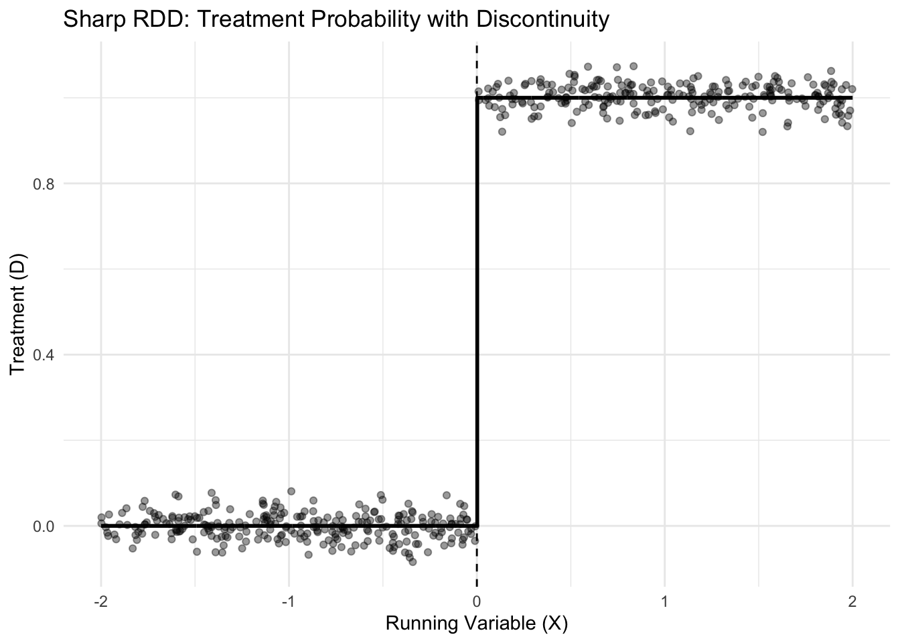
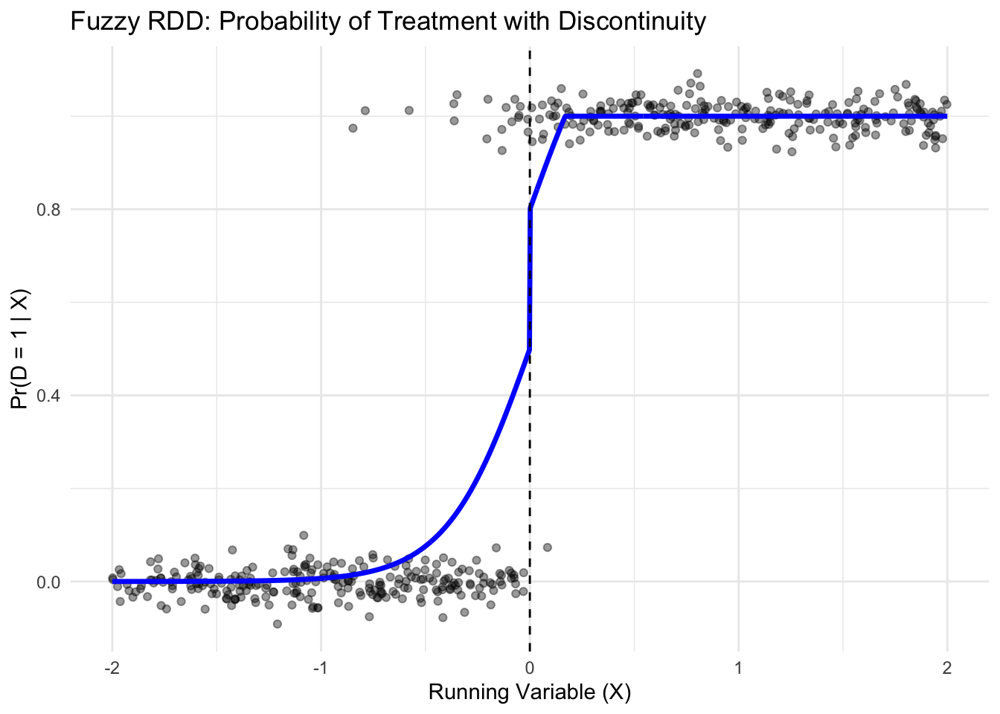
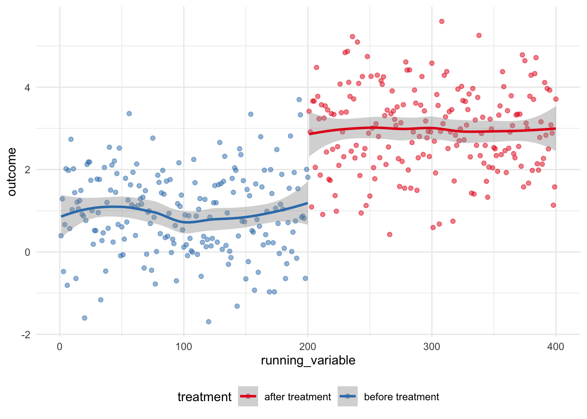
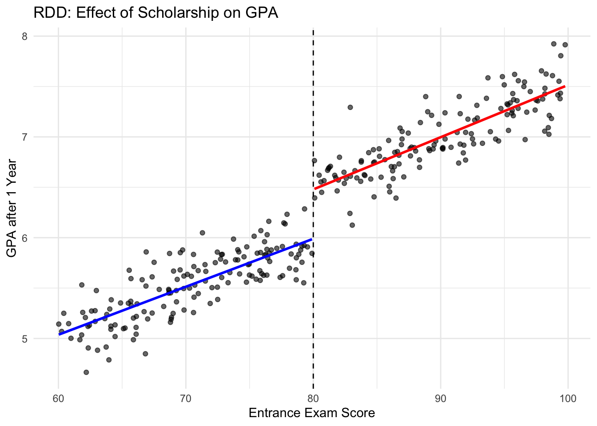
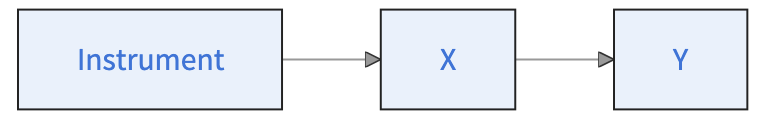
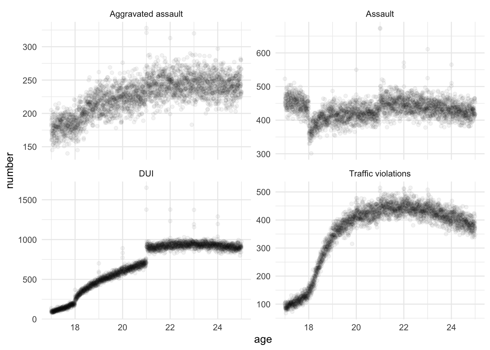

Warning: Using `size` aesthetic for lines was deprecated in ggplot2 3.4.0.
ℹ Please use `linewidth` instead.
Warning: Using `size` aesthetic for lines was deprecated in ggplot2 3.4.0.
ℹ Please use `linewidth` instead.

── Attaching core tidyverse packages ──────────────────────── tidyverse 2.0.0 ──
✔ dplyr 1.1.4 ✔ readr 2.1.6
✔ forcats 1.0.1 ✔ stringr 1.6.0
✔ lubridate 1.9.4 ✔ tibble 3.3.1
✔ purrr 1.2.1 ✔ tidyr 1.3.2
── Conflicts ────────────────────────────────────────── tidyverse_conflicts() ──
✖ dplyr::filter() masks stats::filter()
✖ dplyr::lag() masks stats::lag()
ℹ Use the conflicted package (<http://conflicted.r-lib.org/>) to force all conflicts to become errors
`geom_smooth()` using formula = 'y ~ x'
`geom_smooth()` using formula = 'y ~ x'
\[\begin{equation} Y_{i\{h\}} = \alpha + \beta X_{i\{h\}} + \delta D_{i\{h\}} + \epsilon_i \end{equation}\]
library(tidyverse)
library(MASS)
Attaching package: 'MASS'The following object is masked from 'package:dplyr':
selectlibrary(stargazer)
Please cite as: Hlavac, Marek (2022). stargazer: Well-Formatted Regression and Summary Statistics Tables. R package version 5.2.3. https://CRAN.R-project.org/package=stargazer # Define the bandwidth
h <- 10
# Subset data within ± the threshold
rd_data1<- df |>
filter(abs(X - 80) <= h)
rd_data2<- df |>
filter(abs(X - 80) <= 0.1*h)
# Create running variable centered at the threshold
rd_data1 <- rd_data1 |>
mutate(
centered_X = X - 80, # Centering at the threshold
treatment = if_else(X >= 80, 1, 0) # Treatment indicator
)
rd_data2 <- rd_data2 |>
mutate(
centered_X = X - 80, # Centering at the threshold
treatment = if_else(X >= 80, 1, 0) # Treatment indicator
)
# Estimate local linear regression with interaction
rd_model1 <- lm(Y~ treatment + centered_X, data = rd_data1)
rd_model2 <- lm(Y~ treatment + centered_X, data = rd_data2)
#Compare the models
stargazer(rd_model1, rd_model2, type = "text")
===================================================================
Dependent variable:
-----------------------------------------------
Y
(1) (2)
-------------------------------------------------------------------
treatment 0.573*** 0.691**
(0.061) (0.231)
centered_X 0.041*** -0.014
(0.005) (0.182)
Constant 5.965*** 5.873***
(0.033) (0.140)
-------------------------------------------------------------------
Observations 156 14
R2 0.885 0.806
Adjusted R2 0.884 0.770
Residual Std. Error 0.184 (df = 153) 0.185 (df = 11)
F Statistic 591.223*** (df = 2; 153) 22.789*** (df = 2; 11)
===================================================================
Note: *p<0.1; **p<0.05; ***p<0.01library(rdrobust)
# Parameters
# Run robust RDD
rdd_result <- rdrobust(y = df$Y, x = df$X, c = cutoff, h = 10) # h = points allows to specify the number of points
# Print summary
summary(rdd_result)Sharp RD estimates using local polynomial regression.
Number of Obs. 300
BW type Manual
Kernel Triangular
VCE method NN
Number of Obs. 155 145
Eff. Number of Obs. 82 74
Order est. (p) 1 1
Order bias (q) 2 2
BW est. (h) 10.000 10.000
BW bias (b) 10.000 10.000
rho (h/b) 1.000 1.000
Unique Obs. 155 145
=====================================================================
Point Robust Inference
Estimate z P>|z| [ 95% C.I. ]
---------------------------------------------------------------------
RD Effect 0.631 7.375 0.000 [0.540 , 0.931]
=====================================================================p =.
Affects the treatment (relevance),
Does not directly affect the outcome except through the treatment (exclusion restriction),
Is independent of unobserved confounders (validity).

1st stage : \[\begin{equation} D_i = \alpha + \beta Z_i + \epsilon_i \end{equation}\]
2nd stage : \[\begin{equation} Y_i = \alpha + \beta X_i+ \delta \hat{D}_i + \epsilon_i \end{equation}\]
lm
Treatment ~ InstrumentOutcome ~ fitted_treatment# Load required package
library(AER) # For ivreg (2SLS)Loading required package: carLoading required package: carData
Attaching package: 'car'The following object is masked from 'package:dplyr':
recodeThe following object is masked from 'package:purrr':
someLoading required package: lmtestLoading required package: zoo
Attaching package: 'zoo'The following objects are masked from 'package:base':
as.Date, as.Date.numericLoading required package: sandwichLoading required package: survivallibrary(estimatr)
set.seed(123)
# Sample size
n <- 500
# Instrument: distance to nearest college (in km, exogenous)
distance_to_college <- runif(n, 0, 50) # 0 = very close, 50 = far
# Unobserved confounder: ability or motivation
ability <- rnorm(n, 0, 1)
# Treatment: years of education (depends on distance and ability)
# Students closer to college tend to get more education
education <- 12 + 0.05 * (50 - distance_to_college) + 0.8 * ability + rnorm(n, 0, 1)
# education is continuous: years of schooling
# Outcome: earnings (depends on education and ability)
earnings <- 20000 + 1500 * education + 5000 * ability + rnorm(n, 0, 5000)
# Combine into a data frame
df <- data.frame(earnings, education, distance_to_college, ability)
# Quick look
head(df) earnings education distance_to_college ability
1 45909.00 15.01900 14.378876 -0.37560287
2 38260.18 11.97003 39.415257 -0.56187636
3 41019.36 13.71389 20.448846 -0.34391723
4 41251.12 12.57881 44.150870 0.09049665
5 54311.44 13.24152 47.023364 1.59850877
6 35838.17 14.19486 2.277825 -0.08856511# Naive OLS (biased because of ability confounding)
lm_first <- lm(education ~ distance_to_college, data = df)
df$fitted_educ <- lm_first$fitted.values
ivcom <- lm(earnings ~ fitted_educ, data = df)
summary(ivcom)
Call:
lm(formula = earnings ~ fitted_educ, data = df)
Residuals:
Min 1Q Median 3Q Max
-25795.3 -5499.6 518.1 5419.4 22921.3
Coefficients:
Estimate Std. Error t value Pr(>|t|)
(Intercept) 25102.2 7044.6 3.563 0.000401 ***
fitted_educ 1140.4 528.9 2.156 0.031537 *
---
Signif. codes: 0 '***' 0.001 '**' 0.01 '*' 0.05 '.' 0.1 ' ' 1
Residual standard error: 8360 on 498 degrees of freedom
Multiple R-squared: 0.00925, Adjusted R-squared: 0.007261
F-statistic: 4.65 on 1 and 498 DF, p-value: 0.03154naive_lm <- lm(earnings ~ education, data = df)
summary(naive_lm)
Call:
lm(formula = earnings ~ education, data = df)
Residuals:
Min 1Q Median 3Q Max
-24543.1 -4998.4 0.4 5009.7 19184.5
Coefficients:
Estimate Std. Error t value Pr(>|t|)
(Intercept) -2756.3 2818.7 -0.978 0.329
education 3234.7 210.6 15.358 <2e-16 ***
---
Signif. codes: 0 '***' 0.001 '**' 0.01 '*' 0.05 '.' 0.1 ' ' 1
Residual standard error: 6918 on 498 degrees of freedom
Multiple R-squared: 0.3214, Adjusted R-squared: 0.32
F-statistic: 235.9 on 1 and 498 DF, p-value: < 2.2e-16library(AER) # For ivreg (2SLS)
library(estimatr)iv <- ivreg(Y ~ X | D+X, data)# 2SLS using distance as instrument
iv_model <- ivreg(earnings ~ education | distance_to_college, data = df)
iv_model2 <- iv_robust(earnings ~ education | distance_to_college, data = df)
summary(iv_model, diagnostics = TRUE)
Call:
ivreg(formula = earnings ~ education | distance_to_college, data = df)
Residuals:
Min 1Q Median 3Q Max
-25205.8 -5259.7 446.7 5096.0 20841.8
Coefficients:
Estimate Std. Error t value Pr(>|t|)
(Intercept) 25102.2 6382.8 3.933 9.59e-05 ***
education 1140.4 479.2 2.380 0.0177 *
Diagnostic tests:
df1 df2 statistic p-value
Weak instruments 1 498 150.08 < 2e-16 ***
Wu-Hausman 1 497 31.63 3.12e-08 ***
Sargan 0 NA NA NA
---
Signif. codes: 0 '***' 0.001 '**' 0.01 '*' 0.05 '.' 0.1 ' ' 1
Residual standard error: 7574 on 498 degrees of freedom
Multiple R-Squared: 0.1867, Adjusted R-squared: 0.185
Wald test: 5.664 on 1 and 498 DF, p-value: 0.01769 summary(iv_model2)
Call:
iv_robust(formula = earnings ~ education | distance_to_college,
data = df)
Standard error type: HC2
Coefficients:
Estimate Std. Error t value Pr(>|t|) CI Lower CI Upper DF
(Intercept) 25102 6414.4 3.913 0.0001036 12499.6 37705 498
education 1140 481.6 2.368 0.0182798 194.1 2087 498
Multiple R-squared: 0.1867 , Adjusted R-squared: 0.185
F-statistic: 5.606 on 1 and 498 DF, p-value: 0.01828Start by loading the following packages:
library(rio)
library(tidyverse)
library(rdrobust)
library(estimatr)
library(AER)This exercise is inspired by Carpenter and Dobkin (2015). You are provided with a data set about crime rates in the US, which you can find at https://github.com/scpo-quantimethods/quantitative_methods_two/raw/main/exercices/exercices5/data/carpenter_dobkin_data.dta. You want to analyse the effect of alcohol on crime rates.
age stands for the agearrested_for qualifies the reasons for which people have been arrested. DUI stands for driving under the influence.number is the number of people of that age arrested for that reason.p <- data_set %>% ggplot(aes(x = age, y = number)) +
geom_point(alpha = 0.05) +
facet_wrap(facets = vars(arrested_for), scales = "free_y") +
theme_minimal()
pDo you observe any “jump” or discontinuity in your graphs? If so, where?
Restrict your dataset to DUIs (driving under the influence).
Run your regression discontinuity using rdrobust, with age as the independent variable and number as the dependent variable, using a cutoff at 21 and a bandwidth of 2.
Is this a sharp or fuzzy RDD?
Does being allowed to drink alcohol affect the number of DUIs?
Repeat the analysis using the number of assaults and the legal majority at 18 to examine whether turning 18 has an impact on the number of assaults.
library(rio)
library(tidyverse)
library(rdrobust)
library(estimatr)
library(AER)
carpenter_dobkin_prepared <- import("https://github.com/scpo-quantimethods/quantitative_methods_two/raw/main/exercices/exercices5/data/carpenter_dobkin_data.dta")
glimpse(carpenter_dobkin_prepared)Rows: 11,688
Columns: 3
$ age <dbl> 16.99726, 16.99726, 16.99726, 16.99726, 17.00000, 17.0000…
$ arrested_for <chr> "Assault", "Aggravated assault", "DUI", "Traffic violatio…
$ number <dbl> 523, 205, 120, 100, 451, 183, 139, 103, 442, 160, 94, 104…p <- carpenter_dobkin_prepared %>% ggplot(aes(x = age, y = number)) +
geom_point(alpha = 0.05) +
facet_wrap(facets = vars(arrested_for), scales = "free_y") +
theme_minimal()
p
carpenter_dobkin_dui_only <-
carpenter_dobkin_prepared |>
filter(
arrested_for == "DUI",
abs(age - 21) < 2
)
carpenter_dobkin_assault_only <-
carpenter_dobkin_prepared |>
filter(
arrested_for == "Assault",
abs(age - 18) < 2
)
rdd_dui <- rdrobust(
# specifies the DV
y = carpenter_dobkin_dui_only$number,
# specifies the running variable of the RDD
x = carpenter_dobkin_dui_only$age,
# specifies the cutoff
c = 21,
# specifies the bandwidth, here the unit of analysis is years
h = 2,
all = TRUE
)
rdd_assault <- rdrobust(
# specifies the DV
y = carpenter_dobkin_assault_only$number,
# specifies the running variable of the RDD
x = carpenter_dobkin_assault_only$age,
# specifies the cutoff
c = 18,
# specifies the bandwidth, here the unit of analysis is years
h = 2,
all = TRUE
)
rdd_dui |> summary()Sharp RD estimates using local polynomial regression.
Number of Obs. 1459
BW type Manual
Kernel Triangular
VCE method NN
Number of Obs. 729 730
Eff. Number of Obs. 729 730
Order est. (p) 1 1
Order bias (q) 2 2
BW est. (h) 2.000 2.000
BW bias (b) 2.000 2.000
rho (h/b) 1.000 1.000
Unique Obs. 729 730
=======================================================================================
Method Coef. Std. Err. z P>|z| [ 95% C.I. ]
=======================================================================================
Conventional 192.790 6.221 30.989 0.000 [180.597 , 204.984]
Bias-Corrected 207.423 6.221 33.341 0.000 [195.230 , 219.617]
Robust 207.423 11.524 17.999 0.000 [184.837 , 230.010]
=======================================================================================rdd_assault %>% summary()Sharp RD estimates using local polynomial regression.
Number of Obs. 1096
BW type Manual
Kernel Triangular
VCE method NN
Number of Obs. 366 730
Eff. Number of Obs. 366 730
Order est. (p) 1 1
Order bias (q) 2 2
BW est. (h) 2.000 2.000
BW bias (b) 2.000 2.000
rho (h/b) 1.000 1.000
Unique Obs. 366 730
=======================================================================================
Method Coef. Std. Err. z P>|z| [ 95% C.I. ]
=======================================================================================
Conventional -58.614 2.668 -21.969 0.000 [-63.843 , -53.385]
Bias-Corrected -66.997 2.668 -25.111 0.000 [-72.226 , -61.768]
Robust -66.997 4.033 -16.612 0.000 [-74.901 , -59.092]
=======================================================================================